22nd June 2001
Poppy has put on weight! She is now 20g heavier than at birth. She is also keeping stable, although she had to have a new ventilator tube inserted at lunchtime. Poppy has had the long line in her arm removed, to ensure that all the fungal infection she has is treated properly with the antibiotics she is being given. It will be re-inserted this weekend. Overall, the doctors continue to be pleased with Poppy's progress and have reduced the amount of support she had last weekend for her blood pressure and are thinking of re-introducing her milk feeds over the next few days. Poppy's eyes are starting to open now.
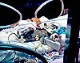
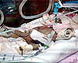
21st June 2001
Poppy has been doing well again today. She has had a scan of her heart to check the size of the hole made by the open valve. It is small and should close without any intervention. She is not wearing her dress this evening because she is having more phototherapy.
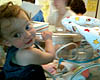
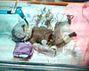
20th June 2001
Another good day for Poppy. She is continuing to improve. Her oxygen requirement is lower now and the pressure in her lungs has been reduced as well. She is breathing for herself much more. She has been dressed for the first time today, because she has not needed phototherapy; this has made her more relaxed.
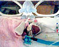
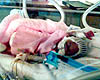
19th June 2001
Poppy has had a good day today. The doctors have decided the reason for her activity is because she is fighting against the ventilator, so they have changed the setting so that she breathes on her own most of the time and the ventilator assists her when she gets tired. This seems to be working and her morphine dose has been reduced. Also today she has had the tube removed from her umbilical cord, so that will heal up and drop off. A fungal infection was found in her blood samples so she is being treated with different antibiotics. A new catheter is being inserted in her arm this evening for taking blood samples and administering fluids. This replaces the tube removed from her umbilicus.
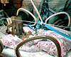
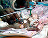
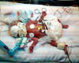
18th June 2001
Poppy has been stable today and her oxygen level is gradually being brought down. Her morphine dose has been increased in an effort to relax her and stop her kicking out the oxygen tube during her amazingly active periods. She is having another blood transfusion this evening.
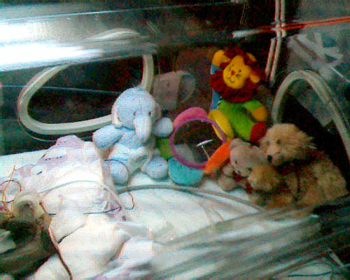
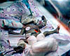
17th June 2001
After recovering from the previous nights drama the early hours of this morning saw Poppy take another turn for the worse. Her lungs were not working as well as they should, so she has been given increased oxygen. There is the possibility that she has developed an infection, so she has been given antibiotics. The test results won't be know for a couple of days but she has been started on the antibiotics anyway. She has been given a blood transfusion today to replace the blood taken for tests. The needle didn't go in the right place to start with so she had it removed and a new one inserted at lunchtime, which is fine. She has been given 10ml of blood, gradually fed in over a four hour period so that her heart can get used to the extra volume. This evening she is stable and her oxygen level is gradually being brought down.
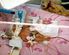
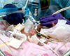
16th June 2001
Poppy had a set-back last night. Due to her being very active her oxygen tube came out. During the procedure to re-insert it the doctor detected a heart murmur. This has been caused by a valve in her heart re-opening. This valve is usually open in unborn babies and re-directs the flow of blood from the heart to the rest of the body, bypassing the lungs. It usually closes after birth causing the blood to flow from the heart to the lungs. Because Poppy's lungs are under-developed and the pressure in them is low, more blood is flowing into the lungs through the re-opened valve, making them have to work harder as a result. The pressure in her lungs has been increased to help them stay inflated and she is being given a drug to increase her blood pressure. Her fluid intake has been reduced and she is not being fed milk. It is not uncommon for the valve to re-open or stay open after birth and it should close in time but if it does not she can be given drugs to close it. In extreme cases surgery may be required. All this attention in the night also caused her temperature to drop but she is stabilising now and her temperature has come back to normal.
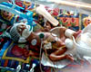
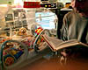